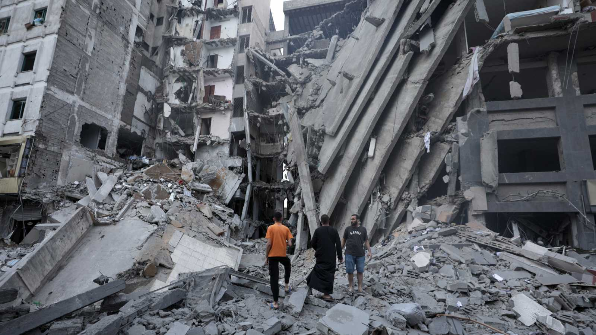
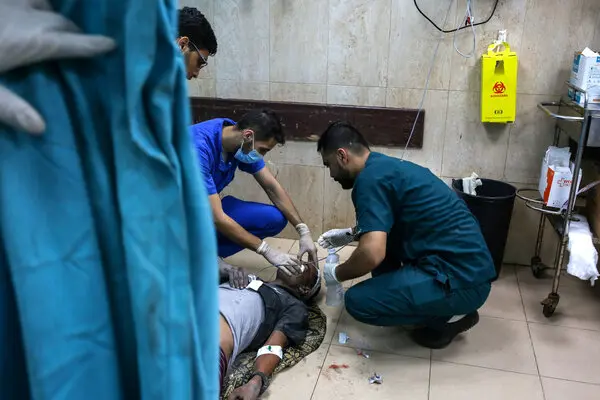

“Me faltan palabras…”: los testimonios que retratan la crítica situación que se vive en la Franja de Gaza
Entre bombardeos constantes y riesgos sanitarios es lo que desprende el relato de dos funcionarias de Médicos Sin Fronteras.

La crítica situación humanitaria que se vive en dicho territorio, la mortal explosión del Hospital Al-Ahli de Gaza este martes contribuyó a empeorar el ambiente de guerra y generó diversas protestas sociales en la región.
Israa Ali, traductora de Médicos Sin Fronteras (MSF) se encuentra en Jabalia, al norte de Gaza, y durante varios días ha debido desplazarse a causa de los bombardeos junto a sus hijos.
“Me faltan palabras para describir un día en la vida de la gente de Gaza en estos momentos. La mañana empieza básicamente cuando nos despertamos. Damos vueltas en la cama e intentamos dormir un rato, pero el ruido de los bombardeos no nos deja”, expresa.
Desde lo anterior, ella describe que se mantienen despiertos escuchando las noticias en la radio, ya que no cuentan con electricidad e internet. Al mismo tiempo que en plena era moderna sus teléfonos están muertos.
Posteriormente, corren para revisar si hay combustible para lograr encender el generador, pero se dieron cuenta que también no funciona. Es ahí cuando ella destaca que “vivimos en una Gaza sitiada”.
Luego, agrega que cuando se tiene hijos, se hace todo lo posible para protegerlos y proporcionarles de todo. No prestando atención a las numerosas veces que se escucha el sonido de las bombas cayendo durante el día. “Ese es un momento en el que se supone que debes ser una madre o padre fuerte, pero lo cierto es que necesitas a alguien que te tranquilice”, sostiene.
Al mismo tiempo, recuerda que tienen el anochecer, donde los drones israelíes, los aviones de guerra, los buques de guerra, los cohetes pesados y las bombas se extienden “como un reguero de pólvora”. Y al calmarse ella y sus hijos, igualmente muchas veces se despiertan llorando.
“Pienso en mi padre, mi madre y mi familia, que se refugian lejos, pero en las mismas circunstancias. Intentas pensar en positivo, en que están lejos de los objetivos de las bombas, pero es en vano, estaré preocupada hasta que escuche sus voces”, finaliza.
Testimonio de los medicos

Guillemette Thomas, coordinadora médica de Médicos Sin Fronteras (MSF) para los Territorios Palestinos Ocupados, con base en Jerusalén, comenta que las pocas instalaciones médicas que continúan abiertas en el norte de Gaza trabajan en condiciones paupérrimas, con escasez de personal, medicamentos y equipos médicos.
Así mismo, que desde la orden de evacuación emitida por las autoridades israelíes, que obligó a más de un millón de habitantes a desplazarse al sur de la Franja, la población debió tomar decisiones difíciles entre quedarse o marcharse. Esto significó que el personal sanitario también debiese decidir si abandonar pacientes a una muerte casi segura o quedarse y arriesgar sus vidas.
Hoy, el personal médico sufre la misma suerte que el resto de los gazatíes: son bombardeados constantemente desde hace 10 días. “Nuestros colegas nos cuentan que muchos médicos y otros trabajadores sanitarios han muerto desde el inicio de la ofensiva israelí”, relata Thomas.
La funcionaria informó que entre 800 y 1.000 personas son heridas cada día en la Franja de Gaza, pero esta cifra sólo incluye a quienes consiguen llegar a un hospital. Desde el comienzo del conflicto, hay más de 9.700 personas heridas.